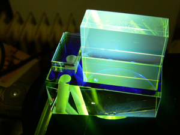

paristechinois
一. 课程
•课程介绍（目前所上过的课，没有上过的课如果可能的话请学长学姐帮忙写呀⋯⋯）
我们学校，就是专业的光学课程。
八月份来会补课和补实验。几何光学，波动光学。和我们大学学的光学课差不多。
然后两年的学习，分四种课程：通识课程（c语言，英语，法语之类），工程师课程（不是专业课，是针对工程师和在公司工作的一些课程，如会计，专利，团队合作等等），科学课程（就是各种光学课，其实课程很广，量子，电动，激光，统计，通信，信号处理，几乎都有涉及），实验课（光学实验，电学实验，编程和相关软件学习）
课程介绍，详细见下面的网址，
http://paristech.iota.u-psud.fr/
这个网址很重要，所有的课程课件都在上面。
左边的master1-2A就是第一年的课程。Master2-3A就是第二年的课程。不是所有课程都要学，第一年的下半学期，和第二年，大部分是选课。随自己的兴趣。
课程学习还是很实在和应用的。当然，有不少英语课可以选。我个人，因为法语较挫，几乎能选英语的都选了。这两年下来，大概一半英语一半法语吧。
实验课是几乎贯穿两年的课，工程量很大。
•如何选专业（如果有专业的话）各专业名称，及各专业人数分布情况
就工程师，没有专业，选课你想选哪个选哪个。有两点，
一、我们学校可以选硕士学位。每年给120欧的样子。其实没有多多少课，就是选课的时候，你选了哪个方向的硕士，你的选择变少了而已。硕士两个方向，先进光学（棱镜非线性方面偏多）和纳米物理（固体，激光等）
二、第二年第一学期，可以用HEC（巴黎高商）的部分课程代替科学课程。主要是针对那些出来不想读博，想做一些跟光学相关但不是研发性质工作的同学。具体会有邮件通知。
•如何选课（选什么课程对以后的专业发展比较有用⋯⋯）
哪些课可选哪些课必选？
详细会有邮件通知。此处没必要说。课程都在刚刚的网址上。
•上课形式（比如一节课多久啊，一般几次课后考试啊，考试形式开闭卷啊之类的）
有大课，60号人之类，但较少，就第一年有两三节课。其他大部分是20~30人的小课堂。然后大部分课都有td课（就是习题课）。就是老师发题目，然后让大家想会，然后讲解。考试大部分是开卷，3小时。大部分笔试，第二年有小部分是口试或做项目。
•一些跟学校生活相关的网站？（比如查课表啊，学校给的邮箱啊，下课件啊等等）
http://paristech.iota.u-psud.fr/
所有信息都在上面
•其他（比如学校的wifi怎么用，如何打印文件，想办什么事要去什么办公室找什么老师之类的）
这些，来了会有人告诉你。邮件，或者学长自然告诉你。
稍微说下。学校就一栋楼。一边是科研实验室和自己学生开的小公司。另一边是教学楼。第一第二层是教室和实验课教室，第三层是办公人员。所有人都在那边。
二. 学校活动
•宿舍的活动（所住的宿舍楼是否有些活动⋯⋯）
宿舍住EP宿舍。活动，这边soirée很频繁。
•社团介绍（体育的，文艺的，跟企业联系的等等⋯⋯）
第二层一小半是社团。种类也不算少。来了看个人兴趣参加。
•soirée（谈谈你们学校soirée的频繁程度啊，在soirée都干些什么）
还能干吗？喝酒跳舞。挺频繁的，平均一星期最起码一次。而且其他学校的soiree也会到我们这边宣传，所以，想soirée，绝对够。
•学校传统活动（parrainage等等⋯⋯）
没怎么关心。有一个体育比赛什么的，是巴黎高科的。然后和其他学校一样，每年开学第一周，都有一个WEI，就是大家一起出去到某个地方玩。一般3天，一般海边。
三. 找实习（最好分专业写，找实习的途径，能找到什么样的实习⋯⋯）
实习有两个。第一年的暑假，11周最少。第二年的春夏的毕业实习，4-6个月。
第一年的实习（6月份开始），可以选择法国内和出国。出国的话，会有一张单子发给你，让你选择3个，然后发给他。然后对每个选项再各派代表，和那边的公司或大学联系。国内的话，应该是自己找，会有不少邮件告诉你信息，网上也会有相应的PDF告诉你哪些公司要招实习。开始申请时间应该是11月，然后1月份最好能搞定。（去美国，签证一定要尽早办，有可能被check。）
第二年的实习，4-6个月。也可以出国或法国。这次出国就没有单子了。不过，像刚刚说的，有邮件通知和PDF的更新。也有一个找实习的网站。在上面的网站上，都会有信息。你登陆了就可以看到。开始申请时间10月份就可以了，没有很明显的开始时间。最好1月份搞定。
实习还是很多的。相比于搞金融之类的，我们的实习不算难找，而且面试的激烈程度也远不如他们。当然，工资就相应地没他们高。实习可以找实验室或公司。如果想出来工作，建议不要呆实验室。而且，实验室工资也低，11周的估计就400一个月。公司会相应多点。小公司400~800不等。大公司有1000，应该也有更多的，较少。4-6个月的实习，也是一样。工资现在我还没有概念。听法国同学说，在大公司，1000-1500应该是有的。当然，也有一些公司或实验室给400的。
实习的种类：
一、类科研所的公司。CEA，ONERA，EADS，CNES，IOGS（就我们学校自己）等。CEA，ONERA和IOGS毕业实习给的offer很多。第二年，每年大概分别有10个人在他们那儿实习（我们学校一届大概就110人左右），但那儿留下中国人的机会，貌似很小。还有就是太空，或做飞机的公司。
二、其他光学相关公司。这些公司，实习每年大概招一到二个人。方向很多。通信如orange。光学电学器材如thales，horiba，sagem，alcatel-lucent，imagine optic，还有其他小公司。棱镜如Essilor。玻璃如saint-gobain。汽车如renault，Valeo。化妆品如OREAL，这个很奇特，每年都会在我们学校招一个人，女生可以一试。其他等等
三、其他非相关公司，安永每年一个名额。有时有BNP，LCL这些银行。
刚刚提到的网站上都有每年的名单，你可以下载对照。值得一提的是，每年11月份会有一个FORUM在我们学校举行。还是很有必要去投投简历和对对话，很有帮助。然后EP也在11月会有，也很有必要去，因为都是很牛的公司。
关于实习的面试。我本来面的就少，大概前前后后才面了不到5家。FORUM上的投简历不算。面试没有问专业问题，或考试的。大概就会就这你的简历问经历之类。然后为什么选他们公司和这个实习。关键，练好法语。英语是最后的稻草。
4.个人的感受（跟法国人的融合程度，对学校的总体评价，以及在这所学校生活学习的一些心得体会，自由发挥啦⋯⋯）
如果你想学习光学，很感兴趣。如果你想做光学方面的工作。来我们学校，很不错！学校很专业，老师绝大部分都很好。法语要练好，不然做项目或上法语课，会很痛苦。
关于花费方面，生活费，你不紧不浪费，一个月500-600。但我们学校每年要交1500的学费和400的其他费用。
奖学金方面，就是埃奖和国奖。
然后中国人不多。工程师方面，每年平均2-3个。我这一届，就我一个中国人。不过第二年，会有其他学校的如11大，Ep的一些硕士项目的人来上课。
四. 职业发展
可以联系以前的学长学姐，问他们是否可以简单的写一写毕业以后的职业生涯，（如最简单的，哪一年到哪一年在哪个公司工作，如果有些学长学姐有时间，问是否可以写一些求职经历（如何找到的啊），心得体会⋯⋯）
我们学校中国人真的很少。我就知道一个学长一个学姐。学长接着在法国读博，学姐去了美国读博。我是想工作的，所以路还得我自己走，走了再告诉你们是什么情况。
关于职业发展。我们学校这样的，读博40%，工作50%，10%创业。读博率在高科算很高的。
或者你们给我们发一下你们学校所有中国学长学姐联系方式的liste，我们可以给他们发邮。
高科09年，刘抗，复旦大学物理系，邮件：
高科10年，袁铨，南京大学物理系，邮件：
高科11年，谢捷斌，上海交通大学物理系，邮件：
出于隐私保护原因，如需要邮件地址，请与我们联系。
作者简介：
2006-2010：南京大学物理学院
2010-2012：Institut d’Optique
袁铨谈Optique

2012年1月28日星期六